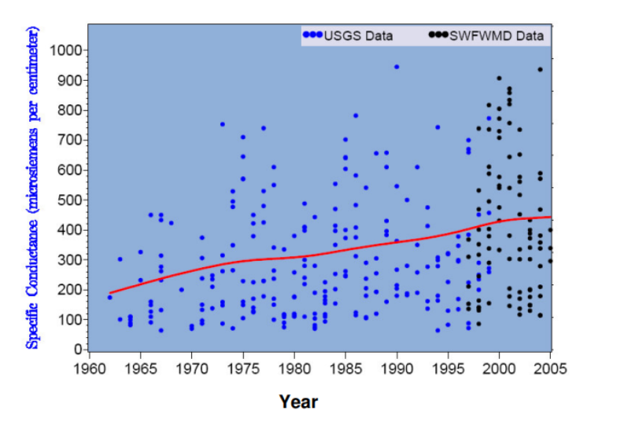

Wayback Machine Intern Report
1 Narrative
Specific conductance measures water’s ability to conduct electricity, which reflects the concentration of dissolved salts and inorganic ions. While terms like “conductivity” and “specific conductance” are often used interchangeably, the latter refers to conductivity normalized to a standard temperature of 25ºC and recorded in micromhos per centimeter (µmhos/cm). Specific conductance is an indirect measure of dissolved solids such as chloride, sulfate, and calcium, which can vary by location and time.
Distilled water has a specific conductance of approximately 1-5 µmhos/cm, whereas seawater has a measure of around 40,000 µmhos/cm. Freshwater streams - the focus of this project - typically have a measure of approximately 100-1800 µmhos/cm.
Increases in specific conductance indicate a rise of dissolved ions in the water. Although difficult to pinpoint, these dissolved ions are often linked to an increase/change in agriculture, urbanization, or other land uses.
2 Purpose
The purpose of this project is to examine temporal trends of specific conductance levels in the Upper Manatee River. To provide broader context, this analysis is compared to similar studies in neighboring watersheds — such as Horse Creek, a tributary of the Peace River in Hardee County. Identifying parallel trends across these regions may offer insight into larger-scale environmental patterns and potential regional drivers of change.
3 The Watershed
The Duette Preserve is a Manatee county-owned park that was purchased from phosphate mining companies in 1984 and 1986. The purchase aimed to protect the Lake Manatee reservoir and watershed, as well as preserve an important ecosystem.
Several tributaries and creeks within the preserve offer key vantage points for monitoring water quality. Surrounding land use — particularly row crop farms, pasturelands, and other agricultural operations — may have evolved over time, potentially influencing conductance levels in the river system.
4 Methodology
4.1 The Sampling Locations - OpenStreetMap
The crux of this project utilizes data collected from the UM4 - Upper Manatee River sampling site, slightly east of the reservoir. East Fork and North Fork are tributaries of the Manatee River that flow through the Duette Preserve, so they are important sites for assessing the quality of the watershed. Horse Creek is the site of the nearby study, essential for comparing similar trends.
All four of these sites are located on the map below. This OpenStreetMap is interactive, so the viewers unfamiliar with the region can zoom in/out to better understand the sampling locations. Users can click on the markers to identify sites.
4.2 Data Exploration & Cleaning
The main time-series analysis utilized data from the Manatee County UM4 sampling site. East Fork and North Fork sampling locations are simply for performing a historical comparative analysis of the Duette Preserve.
This project utilizes water quality data from 1980 to 2024. Since 1995, Manatee County has recorded and stored their environmental data in a database, so I appended the data post-1995 to a .csv. However, 1995 is not a large enough time frame, especially since the Horse Creek study contained data well before that. For data before 1995, I had to think of alternative routes. Manatee County has a digital archive - or “Wayback Machine” - which contains old documents, including historic water quality assessments. There are hundreds of these documents, and some of them contained specific conductance data sampled from UM4. I manually sifted through hundreds of pages, adding usable the data to the master .csv.
I was able to obtain ~335 rows of specific conductance data collected from UM4. I collected ~30 rows of data pre-1995. Although sparse and not ideal, it is the best data available and still provides value. However, the water quality assessment documents only contained data from 1979-1985.
I created a “Years” column to group samples by year, since I am showing the yearly trend of specific conductance. Assuming the data was collected correctly, I did not remove any outliers in terms of conductance. Sometimes, there were values that exceeded 1300 µmhos/cm, and although much larger than most of the observations, these are still realistic measurements for freshwater.
The North and East Fork data was collected from the archived documents and also only contain years from 1979-1985.
4.3 Modeling
Due to the absence of observed values between 1986 and 1994, I employed a modeling approach to estimate the mean specific conductance for those missing years.
Given the time-series nature of the data and the presence of noisy observations, I chose a LOESS (Locally Estimated Scatterplot Smoothing) model to interpolate a smooth trend across the entire time range.
This model allowed me to estimate annual mean conductance values from 1986 to 1994 based on surrounding data while preserving local patterns in the time series.
LOESS is useful here because it utilizes a certain number of nearby points when calculating each local fitted value (eg., fitted values for every year). LOESS performs a weighted linear regression using k nearest neighbors, creating the weights based on the distance from the neighbor to the specific point. So, calculating the best predicted value for missing year 1990 would only use points from years close to 1990, thus increasing accuracy for interpolation in time series data.
To fine-tune the model, I used K-fold cross-validation to identify the optimal span value, which controls the number, k, of neighboring data points used in each local fit. However, the cross-validation results varied across runs, yielding different span values each time. To address this, I repeated the tuning process multiple times to observe convergence patterns, but the selected span remained inconsistent. Lower spans allowed the earlier years (before 1986) to overly influence the interpolated region, since their weights are so large. Higher spans just captured the overall trend, which I did not want. Ultimately, I chose a span of 0.5, as it provided a good balance between the local trend of very small specific conductance levels and the broader trend of large increases in specific conductance levels. It also created a smooth fit that I felt represented the whole data well. A span of 0.5 means that 50% of the data points are used for each weighted regression at each year.
5 Results
To illustrate long-term trends, I calculated the mean specific conductance for each year and grouped the results into 5-year bins. Each bin represents the average specific conductance across its time span. For bins that include missing years, I used LOESS-predicted values to estimate those years’ contributions.
For the 1985–1989 bin, I combined the actual 1985 observation with LOESS-based estimates for 1986–1989 to produce the most accurate representation possible in the absence of real data.
The interpolated bins are directly labeled in the figure below.
For observed 5-year bins, standard error was calculated using the standard deviation of all raw conductivity values within the bin divided by the square root of the sample size, capturing natural variability in the data. For interpolated bins, standard error was derived from the LOESS model’s prediction uncertainty, using the root mean square of the individual prediction SEs divided by the square root of the number of interpolated years, representing model-based estimation error.
The highest 5-year mean conductivity occurred between 2010 and 2014, representing a 322.293 µmhos/cm, a 184.26% increase from the 1980–1984 level.
The total change from the first bin to the most recent (2020–2024) is 207.551 µmhos/cm, a 118.66% increase.
6 Discussion
The data provides strong evidence that specific conductance levels in the Upper Manatee River watershed have increased steadily over the past 40 years.
The long-term trends observed in our study align closely with those reported in the 2007 Peace River Cumulative Impact Study, as shown below in Figure 3. This alignment reinforces the regional trajectory of rising conductivity levels.
Figure 3: Specific Conductance at Horse Creek, Hardee County

6.1 Is This Trend a Concern?
The Florida State Standard specifies that specific conductivity must not exceed 1,275 µmhos/cm or increase more than 50% above background levels, whichever is greater. While our findings show that annual conductivity values remain well below the 1,275 µmhos/cm threshold, long-term trends reveal increases of well over 50% compared to historic baselines.
This raises an important question: do conductance values that remain within the absolute limit, yet have more than doubled over time, still represent a potential water quality concern?
There is no definitive answer to this question. Conductance levels have risen, but not to a degree currently known to harm plants or animals in the watershed. Additionally, the State’s definition for “background levels” is ambiguous, so utilizing historic baselines may not produce an accurate threshold for categorizing harmful conductance levels.
All we know is that the observed trends are clear and consistent across comparable watersheds.
7 Quality Assurance
7.1 Data Integrity
All raw data were checked for completeness, consistency, and validity prior to analysis. Outlier values (e.g., pH > 9) were flagged and reviewed based on known environmental thresholds and patterns in surrounding years. Missing values were explicitly handled using LOESS interpolation only when surrounding data supported stable local trends.
7.2 Model Validation
The LOESS model was selected for its non-parametric flexibility and suitability for environmental time-series data. Model parameters (e.g., span) were selected using a combination of K-fold cross-validation and visual inspection to balance model fit and smoothness. Model fits were reviewed for smoothness and consistency with observed data on both sides of the interpolated gap (1986–1994).
7.3 Reproducibility
All analyses were conducted using R and fully documented in Quarto notebooks. All code was written using the Tidyverse framework, following consistent data manipulation and visualization practices for readability and reproducibility. The scripts are version-controlled and can be re-run using the same data and settings to reproduce all tables, figures, and interpolations.
7.4 Cross-Validation with External Studies
Results were compared against similar studies from the Peace River Cumulative Impact Study (2007), particularly those from Horse Creek and Joshua Creek, to verify consistency of long-term trends across watersheds.
8 Appendix
8.1 North Fork and East Fork Comparative Analysis
This plot portrays the historic specific conductance levels in the Duette Preserve region of the Upper Manatee River.
9 References
10 Acknowledgements
I would like to thank my advisor, Greg Blanchard, and Manatee County for the opportunity to conduct special research and strengthen my data science toolkit. Thank you to anyone who has viewed this report. If you have any questions or feedback, please reach out to me at my LinkedIn.